Chapter 2 Analisis exploratorio
2.1 Dplyr
Primero cargamos las librerias y leemos el csv que anteriormente generamos
library(dplyr)
library(tidyverse)
library(kableExtra)
#virusTotal <- read.csv('~/GitHub/VirusTotal/ProyectoVT/Proyecto/virusTotal.csv')
virusTotal <- read.csv('~/Documentos/LCC/ProyectoVT/Proyecto/virusTotal.csv')Vamos a añadir una columna year y cambiamos los nombres de algunas columnas para que sean más legibles.
virusTotal <- virusTotal %>%
mutate(Year = substr(virusTotal$first_seen, 0, 4))
virusTotal <- virusTotal %>%
rename(country = submission.submitter_country)
virusTotal <- virusTotal %>%
rename(file_type = additional_info.exiftool.FileType)
kable(head(virusTotal,10), booktabs = TRUE) %>%
kable_styling(font_size = 10)| X | …1 | …2 | …3 | scan_date | first_seen | total | size | times_submitted | positives | country | file_type | Year |
|---|---|---|---|---|---|---|---|---|---|---|---|---|
| 1 | 1 | 1 | 1 | 2021-11-03 08:53:57 | 2021-11-03 08:53:57 | 61 | 1956125 | 1 | 20 | US | ZIP | 2021 |
| 2 | 2 | 2 | 2 | 2021-11-03 00:26:03 | 2021-11-03 00:26:03 | 61 | 2667641 | 1 | 20 | CA | ZIP | 2021 |
| 3 | 3 | 3 | 3 | 2021-11-03 08:12:06 | 2021-11-03 08:12:06 | 61 | 3998656 | 1 | 18 | UA | ZIP | 2021 |
| 4 | 4 | 4 | 4 | 2021-11-03 08:44:36 | 2015-01-20 23:53:18 | 64 | 500276 | 263 | 26 | IE | ZIP | 2015 |
| 5 | 5 | 5 | 5 | 2021-11-03 08:54:32 | 2021-11-03 08:54:32 | 62 | 1956125 | 1 | 20 | US | ZIP | 2021 |
| 6 | 6 | 6 | 6 | 2021-11-03 08:22:50 | 2021-11-03 08:22:50 | 61 | 4137920 | 1 | 18 | UA | ZIP | 2021 |
| 7 | 7 | 7 | 7 | 2021-11-03 07:43:10 | 2021-06-03 18:29:36 | 61 | 3031864 | 2 | 15 | UA | ZIP | 2021 |
| 8 | 8 | 8 | 8 | 2021-11-03 00:25:19 | 2021-11-03 00:25:19 | 60 | 2669106 | 1 | 20 | CA | ZIP | 2021 |
| 9 | 9 | 9 | 9 | 2021-11-03 00:19:30 | 2021-11-03 00:19:30 | 60 | 2669106 | 1 | 21 | CA | ZIP | 2021 |
| 10 | 10 | 10 | 10 | 2021-11-03 08:00:30 | 2017-11-28 15:53:18 | 60 | 5884 | 4 | 25 | CZ | DEX | 2017 |
Vamos a encontrar los 10 archivos más pesados del dataset
virusTotal1 <- virusTotal %>%
arrange(desc(size)) %>%
slice(1:10)
kable(head(virusTotal1,10), booktabs = TRUE) %>%
kable_styling(font_size = 10)| X | …1 | …2 | …3 | scan_date | first_seen | total | size | times_submitted | positives | country | file_type | Year |
|---|---|---|---|---|---|---|---|---|---|---|---|---|
| 85 | 85 | 85 | 85 | 2021-11-03 08:30:37 | 2021-11-03 08:30:37 | 61 | 178355426 | 1 | 15 | RU | ZIP | 2021 |
| 64 | 64 | 64 | 64 | 2021-11-03 07:37:40 | 2021-11-03 07:37:40 | 60 | 107759215 | 1 | 17 | US | ZIP | 2021 |
| 50 | 50 | 50 | 50 | 2021-11-03 07:33:53 | 2019-09-08 03:35:40 | 62 | 63071192 | 7 | 15 | GB | ZIP | 2019 |
| 103 | 103 | 103 | 103 | 2021-11-03 09:06:44 | 2018-06-30 02:26:29 | 63 | 53604603 | 3 | 16 | FR | ZIP | 2018 |
| 34 | 34 | 34 | 34 | 2021-11-03 08:16:18 | 2021-11-03 08:16:18 | 61 | 30711904 | 1 | 18 | CA | ZIP | 2021 |
| 105 | 105 | 105 | 105 | 2021-11-03 08:17:09 | 2021-11-03 08:17:09 | 63 | 21035680 | 1 | 23 | CA | ZIP | 2021 |
| 16 | 16 | 16 | 16 | 2021-11-03 08:16:40 | 2021-11-03 08:16:40 | 63 | 20353542 | 1 | 22 | CA | ZIP | 2021 |
| 49 | 49 | 49 | 49 | 2021-11-03 09:14:16 | 2021-11-03 09:14:16 | 60 | 15721098 | 1 | 16 | KR | ZIP | 2021 |
| 175 | 175 | 175 | 175 | 2021-11-03 08:23:25 | 2021-11-03 08:23:25 | 63 | 15645802 | 1 | 16 | NA | ZIP | 2021 |
| 58 | 58 | 58 | 58 | 2021-11-03 08:03:59 | 2021-11-03 08:03:59 | 63 | 15410862 | 1 | 18 | KR | ZIP | 2021 |
Pasamos a ordenar el dataset dependiendo del tipo del archivo
virusTotal2 <- virusTotal %>%
arrange(file_type)
kable(head(virusTotal2,10), booktabs = TRUE) %>%
kable_styling(font_size = 10)| X | …1 | …2 | …3 | scan_date | first_seen | total | size | times_submitted | positives | country | file_type | Year |
|---|---|---|---|---|---|---|---|---|---|---|---|---|
| 10 | 10 | 10 | 10 | 2021-11-03 08:00:30 | 2017-11-28 15:53:18 | 60 | 5884 | 4 | 25 | CZ | DEX | 2017 |
| 15 | 15 | 15 | 15 | 2021-11-03 09:16:16 | 2018-07-07 07:04:03 | 59 | 307908 | 11 | 20 | CZ | DEX | 2018 |
| 20 | 20 | 20 | 20 | 2021-11-03 09:00:20 | 2019-10-01 03:13:27 | 56 | 48204 | 2 | 20 | CZ | DEX | 2019 |
| 21 | 21 | 21 | 21 | 2021-11-03 07:50:10 | 2016-12-03 11:18:21 | 53 | 366676 | 2 | 21 | CZ | DEX | 2016 |
| 23 | 23 | 23 | 23 | 2021-11-03 07:40:40 | 2015-04-07 10:32:52 | 59 | 1674660 | 20 | 25 | CZ | DEX | 2015 |
| 24 | 24 | 24 | 24 | 2021-11-03 08:46:27 | 2017-10-27 21:12:27 | 59 | 424720 | 2 | 20 | CZ | DEX | 2017 |
| 26 | 26 | 26 | 26 | 2021-11-03 07:39:47 | 2018-04-16 22:03:40 | 59 | 5888 | 2 | 25 | CZ | DEX | 2018 |
| 27 | 27 | 27 | 27 | 2021-11-03 07:39:19 | 2019-09-01 04:43:45 | 60 | 7116 | 2 | 17 | CZ | DEX | 2019 |
| 28 | 28 | 28 | 28 | 2021-11-03 08:00:41 | 2017-08-18 16:45:45 | 59 | 17476 | 3 | 25 | CZ | DEX | 2017 |
| 30 | 30 | 30 | 30 | 2021-11-03 07:39:44 | 2018-04-03 07:07:46 | 59 | 6004 | 3 | 26 | CZ | DEX | 2018 |
Mostrar los archivos que son más pesados que la media
mediaSize <- mean(virusTotal$size)
mediaSize## [1] 5621897virusTotal3 <- virusTotal %>%
filter(virusTotal$size > mediaSize)%>%
arrange(size)
kable(head(virusTotal3,10), booktabs = TRUE) %>%
kable_styling(font_size = 10)| X | …1 | …2 | …3 | scan_date | first_seen | total | size | times_submitted | positives | country | file_type | Year |
|---|---|---|---|---|---|---|---|---|---|---|---|---|
| 110 | 110 | 110 | 110 | 2021-11-03 07:52:59 | 2021-10-20 00:56:21 | 60 | 6122851 | 4 | 19 | IT | ZIP | 2021 |
| 17 | 17 | 17 | 17 | 2021-11-03 07:54:29 | 2021-10-18 08:50:50 | 62 | 6122860 | 2 | 18 | IT | ZIP | 2021 |
| 70 | 70 | 70 | 70 | 2021-11-03 07:55:40 | 2021-10-19 04:55:25 | 62 | 6122862 | 2 | 23 | IT | ZIP | 2021 |
| 38 | 38 | 38 | 38 | 2021-11-03 07:54:48 | 2021-10-18 02:40:12 | 62 | 6122893 | 2 | 21 | IT | ZIP | 2021 |
| 156 | 156 | 156 | 156 | 2021-11-03 07:56:23 | 2021-10-19 13:37:27 | 62 | 6122901 | 2 | 26 | IT | ZIP | 2021 |
| 161 | 161 | 161 | 161 | 2021-11-03 07:52:28 | 2021-10-19 13:53:09 | 62 | 6122902 | 2 | 27 | IT | ZIP | 2021 |
| 43 | 43 | 43 | 43 | 2021-11-03 07:54:09 | 2021-10-21 10:15:18 | 61 | 6126959 | 2 | 20 | IT | ZIP | 2021 |
| 29 | 29 | 29 | 29 | 2021-11-03 07:40:00 | 2021-01-16 23:49:02 | 63 | 7032582 | 255 | 19 | MX | ZIP | 2021 |
| 63 | 63 | 63 | 63 | 2021-11-03 07:38:33 | 2019-05-13 04:00:23 | 59 | 7108008 | 3 | 16 | CZ | DEX | 2019 |
| 152 | 152 | 152 | 152 | 2021-11-03 09:12:48 | 2021-10-20 08:44:12 | 57 | 7225742 | 2 | 21 | US | ZIP | 2021 |
Buscamos el primer archivo registrado
virusTotal4 <- virusTotal %>%
arrange(first_seen)%>%
select(first_seen,Year,size,times_submitted,positives,file_type)%>%
slice(1)
kable(head(virusTotal4,10), booktabs = TRUE) %>%
kable_styling(font_size = 10)| first_seen | Year | size | times_submitted | positives | file_type |
|---|---|---|---|---|---|
| 2012-12-18 03:26:17 | 2012 | 6392 | 6 | 28 | DEX |
Por último vamos a contar los archivos dependiendo de su tipo
virusTotal5 <- virusTotal%>%
group_by(file_type)%>%
summarise(
n = n()
)
kable(head(virusTotal5,10), booktabs = TRUE) %>%
kable_styling(font_size = 10)| file_type | n |
|---|---|
| DEX | 58 |
| ZIP | 125 |
2.2 Visualizacion
Vamos a analizar el dataset a traves de los gráficos.
Empezamos con el numero de positivos y las veces que se repiten con Histogramas.
library(ggplot2)
ggplot(virusTotal, aes(x=positives)) + geom_histogram(binwidth = 0.5) + xlab('Positivos') + ylab('Nº de veces') + theme_bw()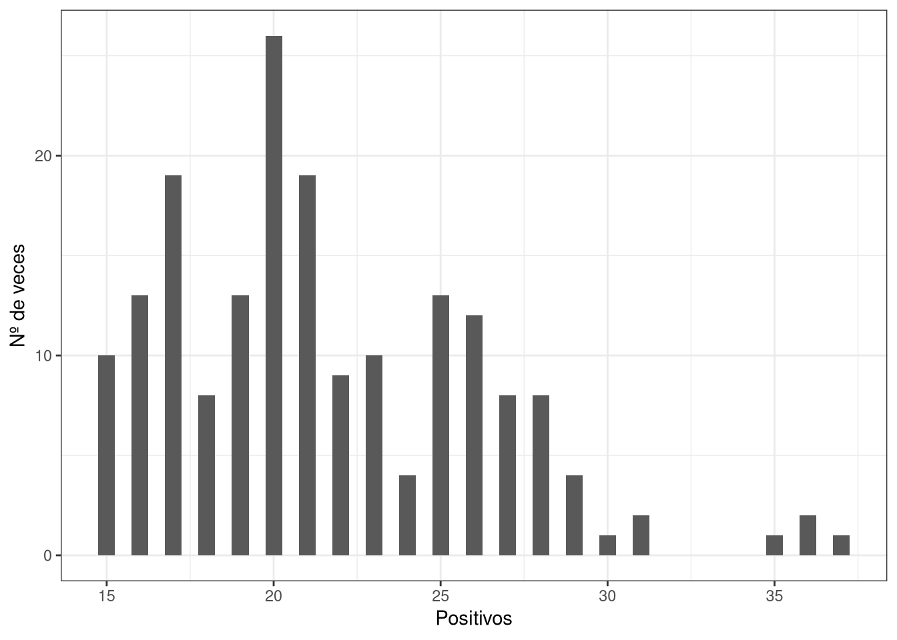
Aquí vemos una gráfica de los años según las veces que aparecen en el dataset
ggplot(virusTotal, aes(x=Year)) + geom_bar(binwidth = 0.9) + xlab('Año') + ylab('Nº de veces') + theme_bw()## Warning: Ignoring unknown parameters: binwidth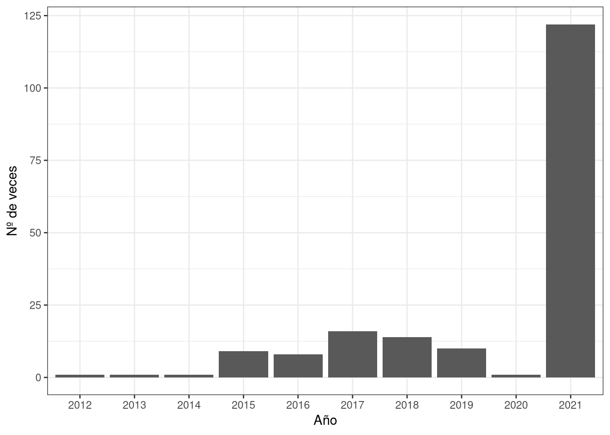
Ahora visualizaremos lo anterior pero con los colores dependiendo del país
ggplot(virusTotal, aes(x=positives, fill=country)) +
geom_histogram(binwidth = 0.5) + xlab('Año') + ylab('Nº de veces') + theme_bw()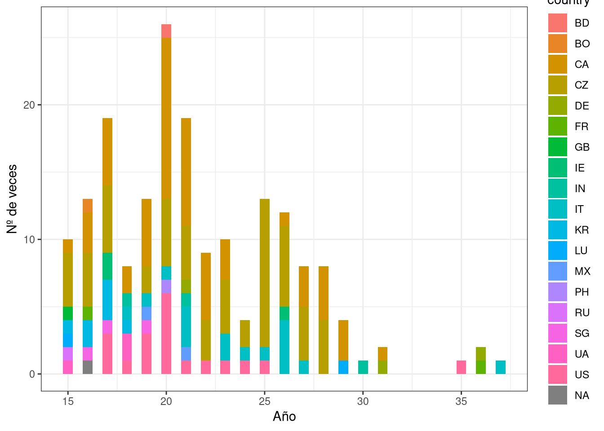
ggplot(virusTotal, aes(x=Year, fill=country)) +
geom_bar(binwidth = 0.9) + xlab('Año') + ylab('Nº de veces') + theme_bw()## Warning: Ignoring unknown parameters: binwidth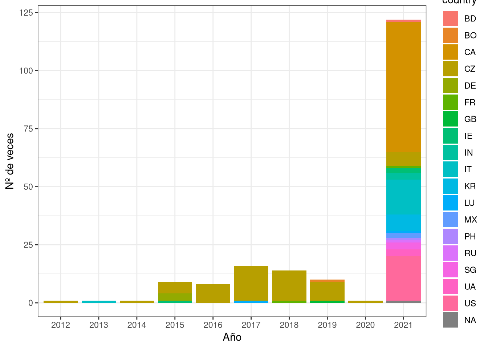
Y respecto al tipo del archivo
ggplot(virusTotal, aes(x=positives, fill=file_type)) +
geom_histogram(binwidth = 1) + xlab('Año') + ylab('Tipo de archivo') + theme_bw()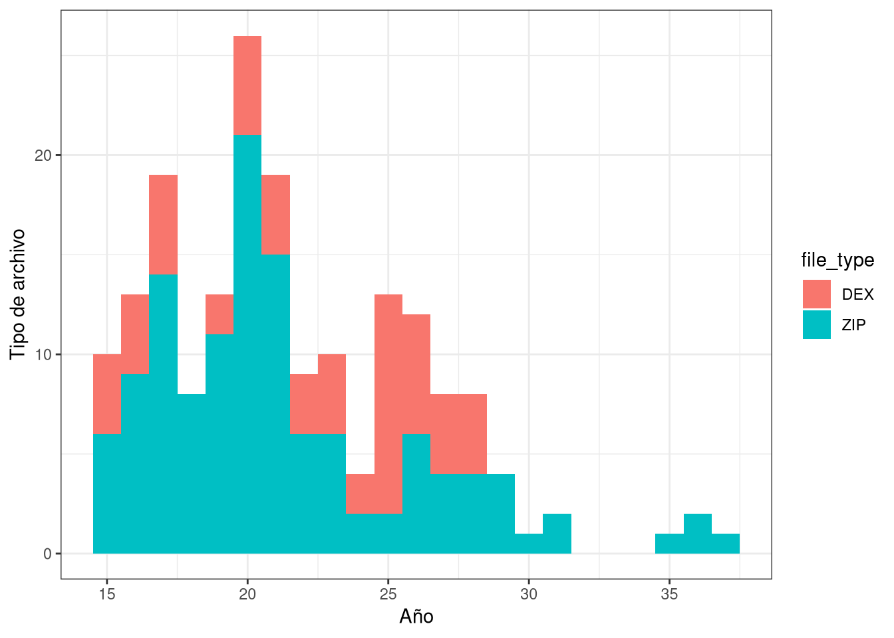
ggplot(virusTotal, aes(x=Year, fill=file_type)) +
geom_bar(binwidth = 1) + xlab('Año') + ylab('Tipo de archivo') + theme_bw()## Warning: Ignoring unknown parameters: binwidth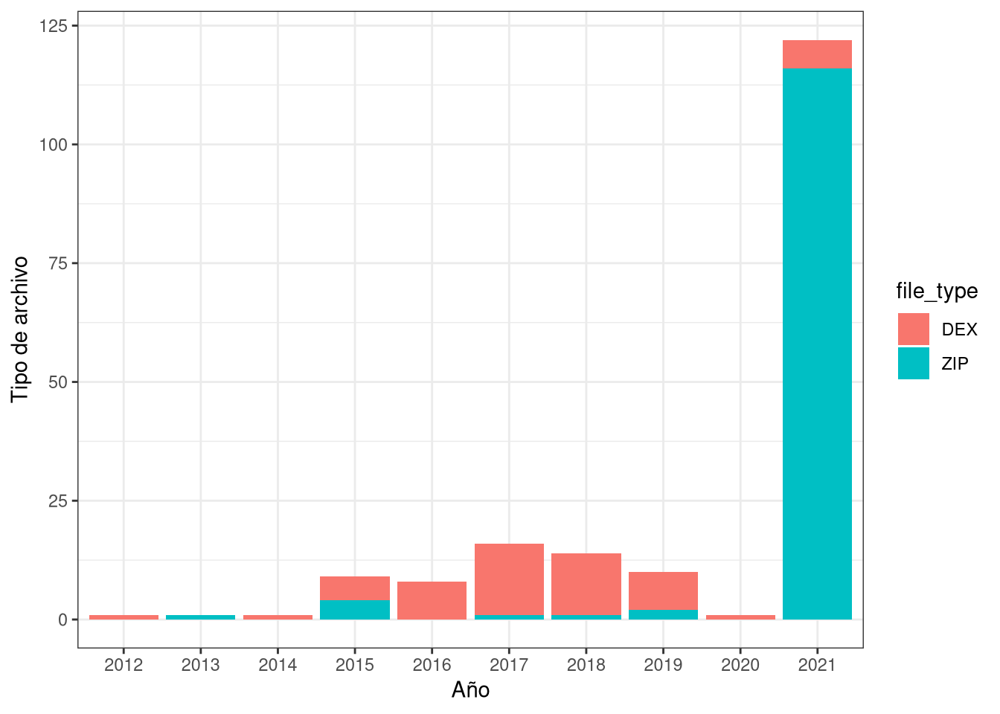
Y también veremos el número de positivos dependiendo del año
ggplot(virusTotal, aes(x=positives, fill=Year)) +
geom_histogram(binwidth = 1) + xlab('Positivos') + ylab('Nº positivos') + theme_bw()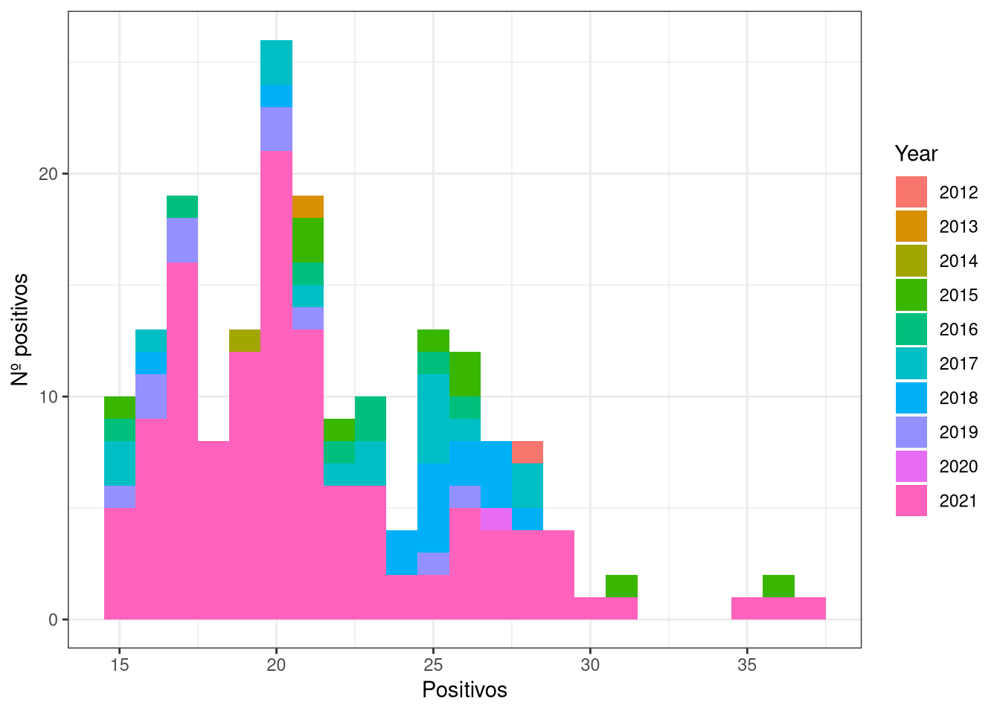
Ahora usaremos Gráficos de puntos para mostrar el número de positivos por país.
ggplot(data=virusTotal, aes(x=positives, y=Year)) +
geom_point(aes(colour=file_type), shape=15, size=5) + xlab('País') + ylab('Nº positivos') + theme_bw()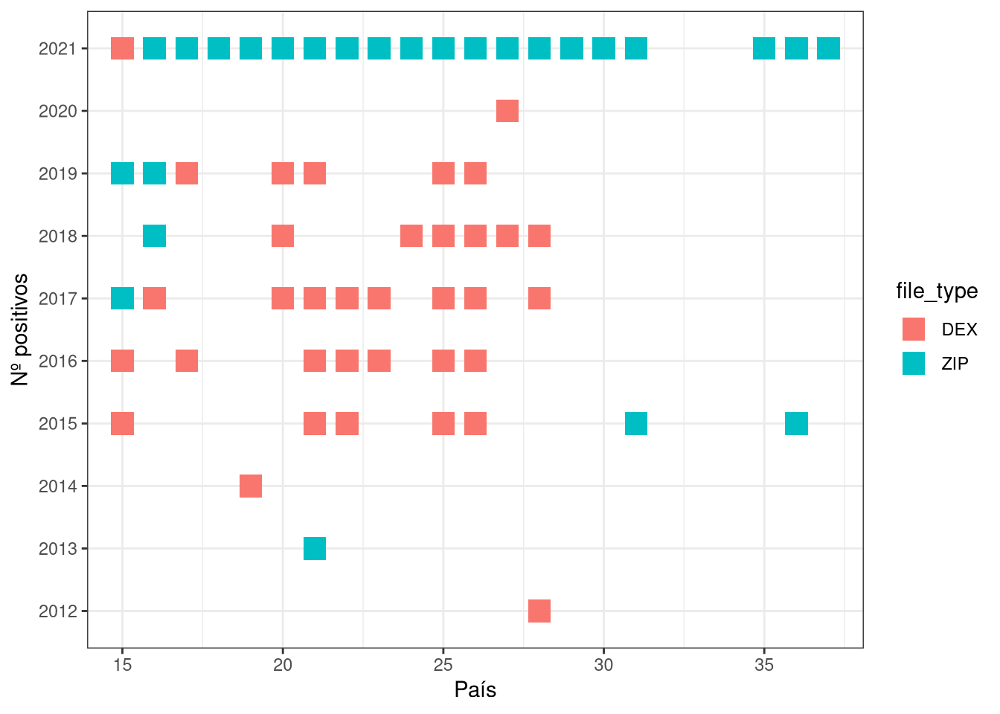
ggplot(data=virusTotal, aes(x=country, y=positives)) +
geom_point(aes(colour=file_type), shape=15, size=5) + xlab('País') + ylab('Nº positivos') + theme_bw()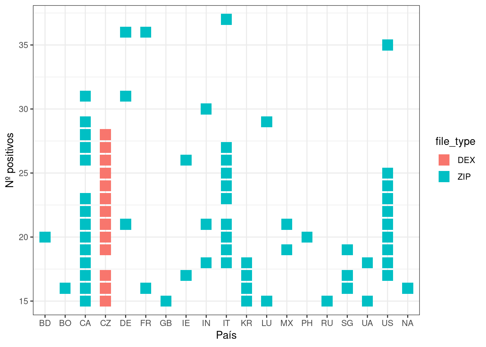 De esta última gráfica sacamos que los archivos tipo DEX solo vienen de República Checa.
ggplot(data=virusTotal, aes(x=country, y=positives)) +
geom_point(aes(colour=Year), shape=15, size=5) + xlab('País') + ylab('Nº positivos') + theme_bw()Por último usaremos gráficos de barras.
ggplot(virusTotal, aes(x=Year, y=positives, fill=file_type)) +
geom_bar(stat="identity", position="dodge") + xlab('País') + ylab('Nº positivos') + theme_bw()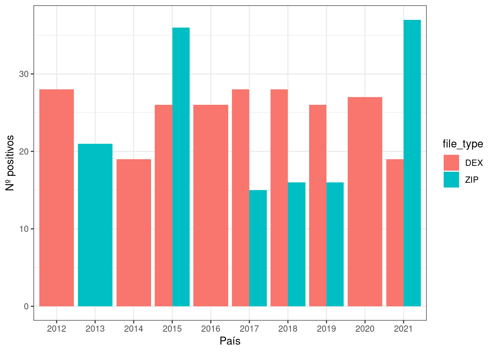
ggplot(virusTotal, aes(x=Year, y=positives, fill=file_type)) +
geom_bar(stat="identity", position="dodge") + xlab('País') + ylab('Nº positivos') + theme_bw()
ggplot(virusTotal, aes(x=country, y=positives, fill=Year)) +
geom_bar(stat="identity", position="dodge") + xlab('País') + ylab('Nº positivos') + theme_bw()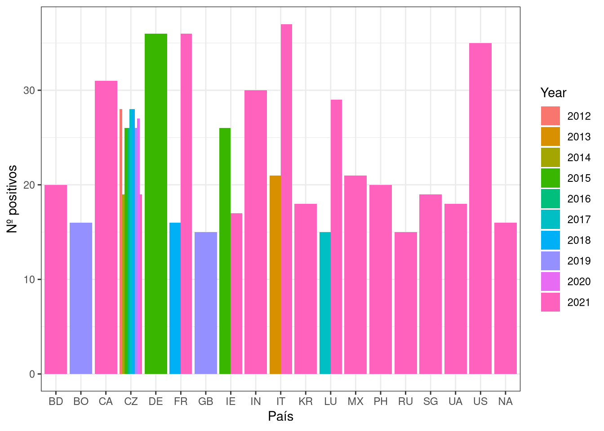
library(igraph)
library(curl)
library(tidyjson)
library(dplyr)
library(purrr)
library(tidyverse)
library(Matrix)
library(ggplot2)